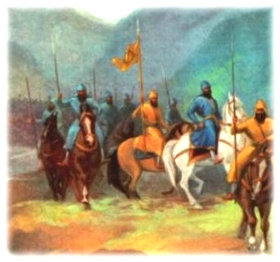

Sikhism


Banda's original name was Lachhman Dev. He was born in Kartik 1727 Bikrami Samvat, October-November 1670, four years after the birth of Guru Gobind singh. He belonged either to Kashmir or Punjab. He was a Rajput cultivator. By the time he was just turned 20, his astonishing mind was set on its task. He had a reputation of being a great hunter. One day he killed a doe which immediately delivered itself of two cubs which expired in his presence. The sight shocked him. He renounced worldly life and became a bairagi sadhu or a wandering hermit and ultimately settled at Nander on the banks of river Godavari in Maharashtra. He won great fame as a sorcerer under the name of Madhodas and commanded thousands of followers.
Guru Gobind Singh went to his hermitage. Madhodas was away. The Guru ordered his disciples to kill a few goats of the Bairagi and cook meat there and then. The matter was reported to Bairagi. The Guru asked him who he was. Madhodas replied, he was Banda or Guru's slave. The Guru inquired, if he knew whom he was talking to. He said he was none other than Guru Gobind Singh. At that time Banda was 38 years old and Guru ji 42. The Guru encouraged him to give up his present way of living and resume the duties of a real Rajput. In few days the Guru held a durbar, conferred the title of Banda Bahadur on him and appointed him his military lieutenant to punish the Governor of Sarhind who had killed his two youngest sons, and was mainly responsible for the death of his two elder sons, his mother and thousands of Sikhs and Hindus. He was given a council of advisers of Five Sikhs who on their arrival in Punjab were to assure the Sikhs that Banda was Guru's nominee and deputy to organize them in order to lead an expedition against Sarhind.

Banda on his journey, 1708-1709
JOURNEY_PICTURE The guru was severely wounded by a Pathan set on the Guru by Wazir Khan with the connivance of the court nobles. The dispatch of Banda to Punjab had infuriated Emperor Bahadur Shah. As a result of his intrigue the Guru passed away on October 7, 1708. Banda had not gone far when he heard the sad news. This did not discourage him. On the contrary it doubled his zeal and set the fire of vengeance ablaze in his heart. Distance between Nander and Hissar in current day Haryana is 1600 KMs. At the rate of 10-16 kms per day Banda should not have taken more than 100 days during his journey, but he actually took about a year. It means that he might have been frequently in hiding. The emperor should have instructed his officers to make short work of Banda and his party. That is why Banda traveled right across Maharashtra and Rajasthan, both of which were in revolt against the Mughals.

The Battle of Sarhind, May 12, 1710 A.D.
The battle was fought at Chhappar Chiri, 20 kms from Sarhind. On the Mughal side Sher Muhammad Khan, Nawab of Malerkotla was the leader of the right wing. Wazir Khan was in command of the center. Suchanand, chief secretary of nawab was put on the left. On the Sikh side, Baj singh Bal a jutt of village Mirpur in Patti distt. of Amritsar, headed right wing. War_SceneBinod Singh (descendent of Guru Angad Dev ji) headed the left wing while Banda commanded the center facing the Wazir Khan's army. Shouts of Sachcha Padishah, Fateh Darshan (Sat Sri Akal was changed to Fateh Darshan by Banda), Sat Sri Akal, Akal, Akal, and ya ali, rent the sky. Suchanand could not withstand the ferocity of Baj singh and soon vanquished and fled away. The artillery fire of the Mughals told heavily on the plunderers in Banda's camp. They were equally divided between Baj singh and Binod singh's forces. Sher Mohammed Khan was about to overpower Binod singh's wing when he was suddenly struck by a bullet and was instantly killed. His men immediately dispersed. War_Scene2 Wazir Khan was rushing upon Banda who stuck fast to his ground and discharged arrows relentlessly. There a bloody battle was going on. Baj singh and Binod singh now joined Banda. Banda and the Sikh leaders now converged on Wazir Khan and he was killed.
Wazir Khan's death is variously described. Khafi Khan says that he was struck by a Musket ball. Mir Mohammed Ahsan Ijad says that Baj singh rushed upon Wazir Khan. Wazir Khan threw his spear at Baj singh. Baj singh caught hold of it. He flung the same spear upon Wazir Khan. It struck the forehead of his horse. Wazir Khan discharged an arrow which hit Baj singh's arm. He then rushed upon him with his sword. At this juncture Fatah singh came to the rescue of Baj singh. His sword cut the Khan from shoulder to the waist.
Banda advances towards Lahore, June 1710
Having set up administrative machinery, Banda advanced from Sarhind to Malerkotla. The town was saved for a ransom of two lakhs on the recommendation of Kishan Das Banya, an old acquaintance of Banda. From there he marched to Morinda. He chastised the Brahmins and Ranghars who had made over Guru Gobind singh's mother and his two youngest son to Wazir Khan. Then he visited Kiratpur and Anandpur to pay homage to shrines. He took Hoshiarpur and Jalandhar and carried fire and sword everywhere. Banda crossed the Beus and fell upon Batala. Then, he went on a pilgrimage to Dera Baba Nanak. At Amritsar Banda made large offerings. He invited young men to embrace Sikhism promising remission of land revenue and other rewards. Then many from the area of Majha joined the Khalsa. Banda marched towards Lahore. Sayyid Islam Khan, the Governor mounted guns on the walls of city. Banda laid a siege, but was unable to force upon the walls of fort. Lahore must have fallen, but Banda was in hurry to look after his government.
Thus entire city remained safe owing to its fortifications. But the entire suburbs for miles around was completely devastated. In this campaign Banda was joined by thousands of low caste Hindus who came into the fold of Khalsa.
Torture and execution of Banda Bahadur by Mughals
Banda Singh's rule, though short-lived, had a far-reaching impact on the history of the Punjab. With it began the decay of Mughal authority and the demolition of the feudal system of society it had created. Banda Singh increasing influence roused the ire of the Mughal emperor, Bahadur Shah, who journeyed northwards from Deccan to punish Sikhs. Instructions were issued to the governors of Delhi and Oudh and other Mughal officers to march towards Punjab. Prohibitory laws against Sikhs were passed. Fearing that some Sikhs might not have smuggled themselves into the royal camp disguised as Hindus, Bahadur Shah ordered all Hindus employed of imperial forces to shave off their beards. Emperor Bahadur Shah's order, issued on December 10, 1710 was a general warrant for the faujdars to "kill the worshippers of Nanak, i.e. Sikhs, wherever they are found. (Nanak Prastan ra Har ja kih bayaband baqatl rasanand)" Banda was chased out of Every corner of Punjab and he took refuge in the Shivalik hills.
He got married to daughter of one of the hill chiefs and it was few years before Mughals could trace him down . He again started his campaigns against Mughals and came out of hills to the plains of Punjab. But was overwhelmed by the superior numbers of Mughal forces. As reported to emperor Bahadur Shah on April 28th 1711, (Akhbarat-i-darbar-i-mualla) , "The wretched Nanak-worshipper (Banda Singh) had his camp in the town of Kalanaur (District Gurdaspur). He has promised and proclaimed: "I do not oppress the Muslims." Any muslim who approaches him, he fixes a daily allowance and wage, and looks after him. He has permitted them to recite khutba and namaz. As such five thousand Muslim have gathered round him.
The massive imperial force drove the Sikhs from Sirhind and other places to take shelter in the fort of Lohgarh in the hilly region. "It is impossible for me," says Khafi Khan a muslim historian of that time, "to describe the fight which followed. The Sikhs in ther faqir's dress struck terror into the hearts of the royal troops. The number of casualties among the latter was so large that for a time it appeared as if they were going to lose."
Further reinforcements arrived and sixty thousand horse and foot closely invested Banda's hill retreat. For want of provisions, Sikhs were reduced to rigorous straits. They killed their horses for food, and when they could stand up to the enemy no longer, they made desperate nightly sally to escape into the hills of Nahan. Banda was far from vanquished. A hukamnamah, issued by him to his followers within a fortnight of his leaving the fort of Lohgarh, showed the spirit which swayed the Sikhs during those arduous times. The following is an English version of Banda Singh's letter.
Sikhs came out of their mountain haunts to recover their lost territories and once again occupied Sadhaura and Lohgarh. Farukh Siyar, who came to the throne of Delhi in 1713, launched against them the sternest proceedings that political authority stirred with a fanatical religious zeal could devise. They were hounded out of plains of Punjab and their main column, under Banda Singh about 4,000 men was subjected to most stringent siege at the village of Gurdas-Nangal, about six kilometers from Gurdaspur.
Gurdas Nangal was an epic of purest heroism in face of heavy odds. According to Muhammad Qasim, the Muslim author of Ibratnamah, who has given an eyewitness account of this campaign, the "brave and daring deeds (of the Sikhs) were amazing. Twice or thrice a day, some forty or fifty of them would come out of their enclosure to gather grass for their animals, and, when the combined forces of the emperor went to oppose them, they made short work of the Mughals with arrows, muskets and small swords, and then disappeared. For eight months the garrison resisted the siege of 100,000 Mughal troops under the gruesome conditions.
Quite apart from the daring exploits of the ordinary Sikh soldier, there were strong rumours in the Mughal camps that Banda Singh had magical powers, and could transform himself into many shapes to escape captivity. Most of the Mughal commanders were afraid of a face to face encounter with Banda, and were conslantly pushing their Qazis and Mullas to the front to offer prayers to counter the spells of the enemy. Abdus Samad Khan openly prayed that Banda escaped from there, so that the whole business could be disposed off on any excuse. Only fresh orders from the Emperor to capture 13anda dead or alive kept him at his task. He was taking new measures everyday to tighten the siege, to starve the delenders to submission. Qamar-ud-Din's forces were holding one half of the circle and his own forces were on the other half.
This siege dragged on for eight months. Towards the end, an unfortunate dispute arose between Banda Singh and one of his most trusted advisers Baba Binod Singh. This man along with Baaj Singh and three others made up the war council that Banda was supposed to consult in any difficult situation. Binod Singh advised the evacuation of the fortress, but for some reasons of his own, Banda wished to fight it out there. Binod Singh was senior in age, and when this difference of views flared up into an open quarrel, Banda agreed to let Baba Binod Singh take his men out of the Fortress. Binod Singh and his supporters then charged out of the fortress and escaped.
Towards the end of November 1715, the remaining defenders were running out of ammunition and food. They were trying to exist on boiled leaves and the bark of trees, and were gradually reduced to mere skeletons. Then on 17th December, 1715, Abdus Samad shouted across the separating moat, that he would not allow any killing by his men, if Banda opened the gate to the fortress. When Banda ordered the gate be opened, the Mughals rushed in to spear or stab as many as three hundred of the half-dead and helpless defenders. About 200 were captured alive and handcuff'ed in twos. Banda Singh had chains round his ankles and his wrists, and was then locked in an iron cage. picture The Mughals were still afraid that he might escape and so they placed a guard on each side of the cage with swords drawn and the cage was placed aloft an elephant, which led the procession, which paraded through Lahore, hefore proceeding towards Delhi. Zakaria Khan, the son of the Lahore Governor, then took charge. and in order to give the Emperor a bigger present, he ordered his men to lop off more heads of Sikhs that they caught on the way, and he loaded them on to the carts that carried the 300 from (Gurdas Nangal). The rest Sikhs around 740 Sikhs along with Banda Singh were taken to Lahore, and thence to Delhi. The cavalcade to the imperial capital was a grisly sight. Besides 740 prisoners in heavy chains, it comprised seven hundred cartloads of the heads of the Sikhs with another 200 stuck upon pikes. On 26th Fehruary, 1716, this procession neared Delhi, and Farukh Siyar ordered his Minister Mohammed Amin Khan to go out to receive them and to prepare them for a suitable display in the town. On the 29th February, the citizens of Dclhi had lined the streets in full force, to get a good sight of the show. E:irst marched 2,000 soldiers each holding a Sikh head impaled on his upright spear (so many extra had been collected on the way). Next followed Banda Singh's elephant. A gold-laced red turban was placed on his head, and to add further mockery to his plight, a bright printed scarlet shirt was slipped on his body. Then carne 740 prisoners (500 had been collected on the way). These men were chained in pairs and thrown across the backs of camels. Their faces were blackened, and pointed sheepskin or paper caps were clapped on their heads. Behind this line came the Mughal Commanders, Mohammed Amin Khan, his son Kamar-ud-Din Khan, and his son-in-law Zakaria Khan. Their army men lined both sides of the streets.
However humiliating their plight, there were no signs of dejection or remorse on the faces of these Sikhs. In the words of Mohammed Harisi, author of the Ibratnama, who was on the spot that day: "The crowds were pressing forward to get a better view Many were enjoying the sight and taking hillarious jibes at them. But nothing changed the air of calm and resignation on the faces of those Sikhs. There were no signs of bitterness or dejection anywhere. They appeared to be happy with their lot, and were actually joined in groups singing their Guru's hymns. If anyone remarked that they were being punished for their sins, their retort was: 'No, it is all according to God's Will ?"' When we see the list of weapons captured from them at Gurdas Nangal we are really amazed at what they could do with so little. This is the list as supplied by Kanwar, the author of the Tazkrah: 1,000 swords, 217 small swords, 114 daggers, 278 shields, 173 bows, and 180 rifles. In spite of this scanty material they could have continued defying the Mughal might a long long time, if only their supplies of food had not run out.
C.R.Wilson, a Bengal civilian, has given in his Early Annals of the English in Bengal the following description of the entry of the Sikh captives into Delhi:
"Malice did its utmost to cover the vanquished with ridicule and shame. First came the heads of the executed Sikhs, stuffed with straw, and stuck on Bamboo's, their long hair streaming in the wind like a veil, and along with them to show that every living thing in Gurdaspur had perished, a dead cat on a pole. Banda himself, dressed out of mockery in a turban of a red cloth, embroidered with gold, and a heavy robe of brocade flowered with pomegranates, sat in an iron cage, placed on the back of an elephant. Behind him stood a mail-clad officer with a drawn sword. After him came the other 740 prisoners seated two and two upon camels without saddles. Each wore a high foolscap of sheepskin and had one hand pinned to his neck, between two pieces of wood. At the end of the procession rode the three great nobles, Muhammad Amin Khan, sent by emperor to bring in prisoners, Qamr-ud-Din, his son, and Zakariya Khan, his son-in-law. The road to the palace, for several miles was lined with troops and filled with exultant crowds, who mocked at the teacher (Guru) and laughed at the grotesque appearance of his followers. They wagged their heads and pointed the finger of scorn at the poor wretched a they passed. "HU! HU! infidel dog worshippers your day has come. Truly, retribution follows on transgression, as wheat springs from wheat, and barley from barley!! " Yet the triumph could not have seemed complete. Not all the insults that their enemies had invented could rob the teacher and his followers of his dignity. Without any sign of dejection or shame, they rode on, calm, cheerful, even anxious to die the death of martyrs. Life was promised to any who would renounce their faith, but they would not prove false to their Guru, and at the place of suffering their constancy was wonderful to look at. 'Me deliverer, kill me first,' was the prayer butcher_Killing_Sikhs which constantly rang in the ears of the executioner.
"Khafi Khan illustrates the resolute will and complete devotion to their cause displayed by those Sikhs by telling us about one young prisoner who was about to be called up from the line. This boy had been newly married and had been hauled in by Zakaria Khan's soldiers on the way, only to swell the number of captives for the pleasure of Farukh Siyar. He was the only son of his widowed mother, who had hurried to plead her case before the Emperor. She said that her son had been beguiled into joining the Sikh bands, but was not a Sikh at heart. On that ground, the Emperor wrote out the order of pardon for the boy, and thc mother had hurried with that note and handed it to the officer-in-charge of the executions. The officer read out the pardon and the youth shouted out, "My mother has lied. I am a Sikh of my Guru in body and soul. Do not separate me from my departed friends. Please hurry so that I can join them now." Saying that he left the guards dumbfounded and rushed away to the front of the queue again. He lowered his head before the executioner and refused to budge until the sword had descended and cut him into two.
"That gory scene was enacted for seven days until all the ordinary captives had been disposed off. According to Mohammed Harisi, their bodies were loaded on wagons and taken out of town to be thrown to the vultures. The heads were hung up on trees or on poles near the market-place to be a lesson to all rebels. Not one from the 700 odd men had asked for pardon. The jailors next turned their attention to the 20 odd sardars, including Baaj Singh, Fateh Singh, Ahli Singh and Gulab Singh (of Lohgarh fame). These men were tortured to the extreme and were asked to divulge the place where they had buried all the treasures that had been looted from Sirhind, Batala and other towns during their better days.
"Failing to get any clues after three months, they prepared to put an end to their lives on Sunday, 9th June, 1716. Banda's cage was again hoisted on top of an elephant, and he was dressed in mock attire of an emperor, with a colourful red pointed turban on his head. His 4 year old son Ajai Singh was placed in his lap. The twenty odd sardars marched behind the elephant and this special procession then passed through the streets of Delhi, and headed for the Kutub-ud-din mausoleum of Bahadur Shah, near the present Kutab Minar. On reaching that graveyard, the captives were again offered a choice of two alternatives: conversion to Islam or death. Needless to say all chose death. The Sikh sardars were subjected to tortures before being executed. Their heads were then impaled on spears and arranged in a circle round Banda who was now squatting on the ground. There were hundreds of spectators standing around watching this scene. Here they made him paraded around the tomb of late emperor Bahadur Shah and put him to a barbarous death.
"Banda Singh was then given a short sword and ordered to kill his own son Ajai Singh. As he sat unperturbed, the cxecutioner moved forward and plunged his sword into the little child cutting the hody into two. Then pieces of flesh were cut from the body and thrown in Banda's face. His liver was removed and thrust into Banda Singh's mouth. The father sat through all this without any signs of emotion. His powers of endurance were to be tested still further. But before that, Mohammed Amin Khan, who was standing near spoke as follows: "From your manner so far you appear to be a man of virtue, who believes in God, and in doing good deeds. You are also very intelligent. Can you tell me why you are having to suffer all this here ?"
"Banda's reply was, "When the tyrants oppress their subjects to the limit, then God sends men like me on this earth to mete out punishment to them. But being human, we sometimes overstep the laws of justice, and for that we are made to pay whilst we are still here. God is not being unjust to me in any way."
"The executioner then stepped forward and thrust thc point of his dagger into Banda's right eye, pulling out thc eyeball. He then pulled out the other eyeball. Banda sat through all this as still as a rock. His face gave no twitch of pain.
"The cruel devil then took his sword and slashed off Banda's left foot, then both his arms. But Banda's features were still calm as if he was at peace with his Creator. Finally they tore off his flesh with red-hot pincers, and there being nothing else left in their book of tortures, they cut his body up into a hundred pieces, and were satisfied. (These details of the torture are given in full, by the following writers: Mohammed Harisi, Khafi Khan, Thornton, Elphinstone, Daneshwar and others).
The ambassadors of the East India company, John Surman and Edward Stephenson, who were in Delhi then and had witnessed some of these massacres, wrote to the governor of Fort William: "It is not a little remarkable with what patience Sikhs undergo their fate, and to the last it has not been found that one apostatized from his new formed religion. "
On June 9th , came the turn of Banda Singh. Harshest torments had been reserved for him. His eyes were pulled out and his hands and feet chopped off. His flesh was torn with red hot pincers. The end came, mercifully for him with the executioner's axe falling on his neck. With his end Sikhism did not die on the contrary Sikhism came out strong and the torch of Banda Singh Bahadur was carried with new Warriors like Nawab Kapur Singh Virk, Sardar Budh Singh, Sardar Charat Singh, Baba Deep Singh ji Shaheed, Sardar Jassa Singh ji Ahluwalia, Maharaja Ranjit Singh, Hari singh Bhangi, etc.
Manas ki jaal sabhai ekai pehchaanbo is the Guru Gobind Singh's message. which emphatically states "men may call themselves Hindus, Muslims, Emams and Shaffies, but I see them all belonging to one race?mankind." Guru Gobind Singh had given Banda specific orders to punish those who had persecuted good saints like Pir Budhu Shah. He had not mentioned any revenge on those who had executed his own young boys at Sirhind. Hc had expected Bahadur Shah to fulfil his promise to punish those who had committed atrocitics on good men, but had parted company from the Emperor completely disappointed. Banda Singh was then taught to bring to reality the Guru's own dream: